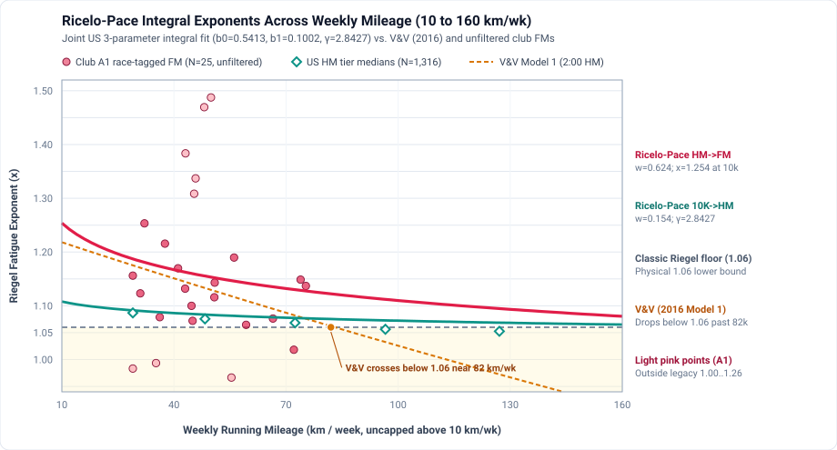
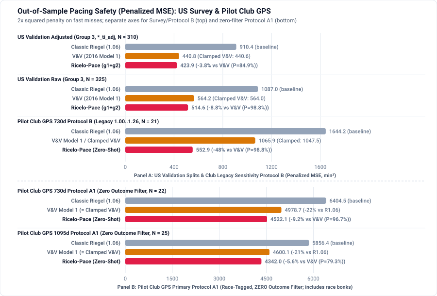
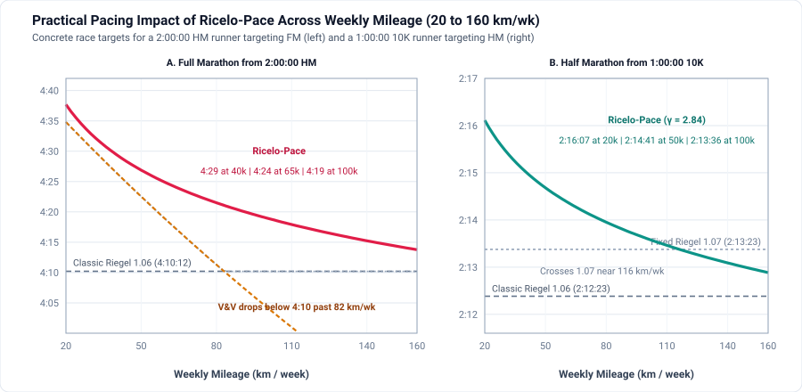

Why Marathon Calculators Predict Too Fast, and How Ricelo-Pace Fixes Them
Built from 2,303 US survey runners and tested on real GPS watch training logs from 5K to the marathon.
Why Race Calculators Set Your Marathon Goal Too Fast
Run a 2:00:00 Half Marathon, plug it into almost any online race calculator, and it will give you a marathon goal of 4:07 to 4:10.
Most calculators still use Pete Riegel's 1977 formula or tables with a similar curve. That 1.06 exponent works well if you run 180+ km per week like an elite marathoner.
Most recreational marathoners run 35 to 65 km per week. Across 1,022 US recreational marathons, Riegel 1.06 predicts finish times 13 to 15 minutes too fast on average and misses by 10 minutes or more for over half of runners.
Weekly Mileage: The Missing Input
In 2016, Andrew Vickers and Emily Vertosick studied 2,303 recreational runners and showed that adding weekly mileage beside a shorter race time cut average marathon error from 16.1 minutes down to 11.2 minutes.
Their model was a big improvement, but testing it across all paces, distances, and real GPS watch logs from 162 members of an Indonesian running club showed three practical limits:
- Impossible paces at high mileage: Because it adds mileage with a straight-line speed formula, high mileage can overpower slower race pace. In the US dataset, it predicted faster than elite Riegel 1.06 for 19 runners, and even faster per kilometer in the marathon than in their shorter race for four runners.
- Too slow for fast runners: That same flat speed slope predicts sub-3:15 marathoners nearly 3 minutes too slow.
- Marathon only, one-way only: It gives no mileage adjustment for Half Marathons or 10Ks, and cannot predict a Half Marathon from a recent marathon.
How Ricelo-Pace Works
Ricelo-Pace keeps Riegel's simple formula and only changes the exponent (try it in the live calculator). You need one recent race and your weekly running mileage in km/week (multiply miles/week by 1.609):
Here is a fixed weight for each race pair: 0.624 for HM ↔ FM, 0.380 for 10K ↔ FM, 0.260 for 5K ↔ FM, 0.154 for 10K ↔ HM, 0.085 for 5K ↔ HM, and 0.011 for 5K ↔ 10K.
Half to Full Marathon in One Line
For Half Marathon to Full Marathon (), multiplying in ahead of time gives a one-line shortcut:
Example: a 2:00:00 Half Marathon (120 min) at 50 km/week gives and = 4:26:53. In Excel or Google Sheets: =A2 * 2^(1.06 + MAX(0, 0.3377 - 0.0625 * LN(MAX(10, B2)))).
What the Formula Handles for You
- Never faster than Riegel 1.06: High mileage brings your exponent down toward 1.06, never past it.
- Biggest gains at moderate mileage: Moving from 25 to 50 km/week cuts far more marathon fade than moving from 100 to 125 km/week.
- Same answer in both directions: Converting Half to Full and Full back to Half match exactly, and chaining 5K → Half → Full gives the exact same second as 5K → Full.
- Works across all distances: Short efforts (15-min Balke test, 5K, 10K) stay close to 1.06, while mileage matters much more from the Half Marathon up.

How Accurate Is It? Tests on Real Runners
- US marathoners: Tested on unseen runners in Vickers & Vertosick's dataset, Ricelo-Pace cut average marathon error by 5.1 minutes vs. Riegel 1.06 (11.1 vs. 16.1 min), matched V&V on course-adjusted marathons, and had fewer risky fast misses on raw marathon times.
- US Half Marathons & reverse predictions: Across 1,316 Half Marathons, Ricelo-Pace beat both Riegel 1.06 and 1.07. Predicting Half Marathons downward from a recent marathon (717 runners), Riegel 1.06 ran 6.5 minutes too slow on average; Ricelo-Pace cut total error from 7.8 down to 5.0 minutes.
- Club GPS watch logs: We then tested the US formula untouched on two years of Indonesian club races in warm, humid weather, keeping every finish (including bad race-day blow-ups). The table shows the average miss in minutes (MAE) and Penalized MSE, a score that counts too-fast predictions twice as heavily as too-slow ones, because starting too fast causes the worst late-race slowdowns. Lower is better for both:
| Club GPS Marathon Group | Riegel 1.06 | V&V (2016) | Ricelo-Pace |
|---|---|---|---|
| Race-tagged marathons (N = 22, all finishes) | 33.9m MAE / 6405 PenMSE | 28.8m / 4979 | 28.9m / 4522 (-9% PenMSE) |
| All 42.2 km finishes (N = 37) | 47.7m MAE / 9259 PenMSE | 41.0m / 7073 | 37.2m / 5825 (-18% PenMSE) |
| Well-paced marathons without blow-ups (N = 21) | 22.3m MAE / 1644 PenMSE | 17.8m / 1066 | 14.8m / 553 (-48% PenMSE) |

Race-Day Chart: Finish Times by Weekly Mileage
Find your weekly mileage in the left column to see your predicted finish time from a 2:00:00 Half Marathon (5:41/km) or a 1:00:00 10K (6:00/km). The time in parentheses is how much slower that is than the standard 1.06 calculator:
| Weekly Mileage | 2:00:00 HM → FM (R1.06 = 4:10:12) | FM Exp. | 1:00:00 10K → HM (R1.06 = 2:12:23) | HM Exp. |
|---|---|---|---|---|
| 20 km/week | 4:37:41 (+27:29) | 1.210 | 2:16:07 (+3:44) | 1.097 |
| 30 km/week | 4:32:51 (+22:39) | 1.185 | 2:15:29 (+3:06) | 1.091 |
| 40 km/week | 4:29:28 (+19:16) | 1.167 | 2:15:02 (+2:39) | 1.086 |
| 50 km/week | 4:26:53 (+16:41) | 1.153 | 2:14:41 (+2:18) | 1.083 |
| 65 km/week | 4:23:52 (+13:40) | 1.137 | 2:14:16 (+1:53) | 1.079 |
| 80 km/week | 4:21:30 (+11:18) | 1.124 | 2:13:57 (+1:34) | 1.076 |
| 100 km/week | 4:18:59 (+8:47) | 1.110 | 2:13:36 (+1:13) | 1.072 |
| 130 km/week | 4:16:05 (+5:53) | 1.093 | 2:13:11 (+0:48) | 1.068 |
| 160 km/week | 4:13:52 (+3:40) | 1.080 | 2:12:53 (+0:30) | 1.065 |

Takeaways for Runners and Coaches
- Set your marathon goal from your mileage, not just your Half time. A 2:00 Half Marathoner running 40 km/week should plan for about 4:29 (6:23/km), not the 4:10 (5:56/km) most calculators show. That is almost 30 seconds per km too fast, which is often enough to bring on a hard slowdown in the last 10 km.
- Enter your weekly mileage from before the taper. A good number is the average of your six biggest weeks in the 10 weeks before race day. An 8-week watch average taken in race week includes the taper and reads about 18% low (47 vs. 57.5 km/week in the club logs). Use the lower watch number for a safer goal in a first marathon, heat, or hills, and the pre-taper number for a well-tapered goal race in good conditions. For a Half Marathon, the taper barely changes the result.
- Extra mileage matters most at the low end. Runners with more weekly mileage held their pace better over the marathon, and the difference was biggest below about 65 km/week. With the same 2:00 Half, going from 30 to 65 km/week lowers the predicted marathon by about 9 minutes (4:32:51 to 4:23:52). Going from 100 to 130 km/week saves less than 3 minutes.
- After a marathon, aim faster in shorter races. Starting from a recent marathon, the standard calculator set Half Marathon times 6.5 minutes too slow on average, because it reads late-race fade as a lack of speed. Ricelo-Pace works in both directions, so enter your marathon and weekly mileage to set Half, 10K, or 5K goals.
- Use short, hard tests to check speed. Between 5K and 10K, weekly mileage barely changes the prediction, so a 5K time trial or a 15-minute Balke test is a simple fitness check during a training block. Run it as a real effort: easy training runs make poor inputs and threw off several Half Marathon predictions in the club data. For a marathon goal, a recent Half Marathon is still the best input, because a shorter jump in distance leaves less room for error.
- Treat the result as a starting pace, not a promise. Even with mileage included, US marathon predictions missed by about 11 minutes on average. Start at the predicted pace and save any push for the last 10 km.
Riegel's formula has lasted because it needs only one race time. Ricelo-Pace keeps that and adds one number every runner already knows: weekly mileage.
Try your own race time or inspect the benchmark code: